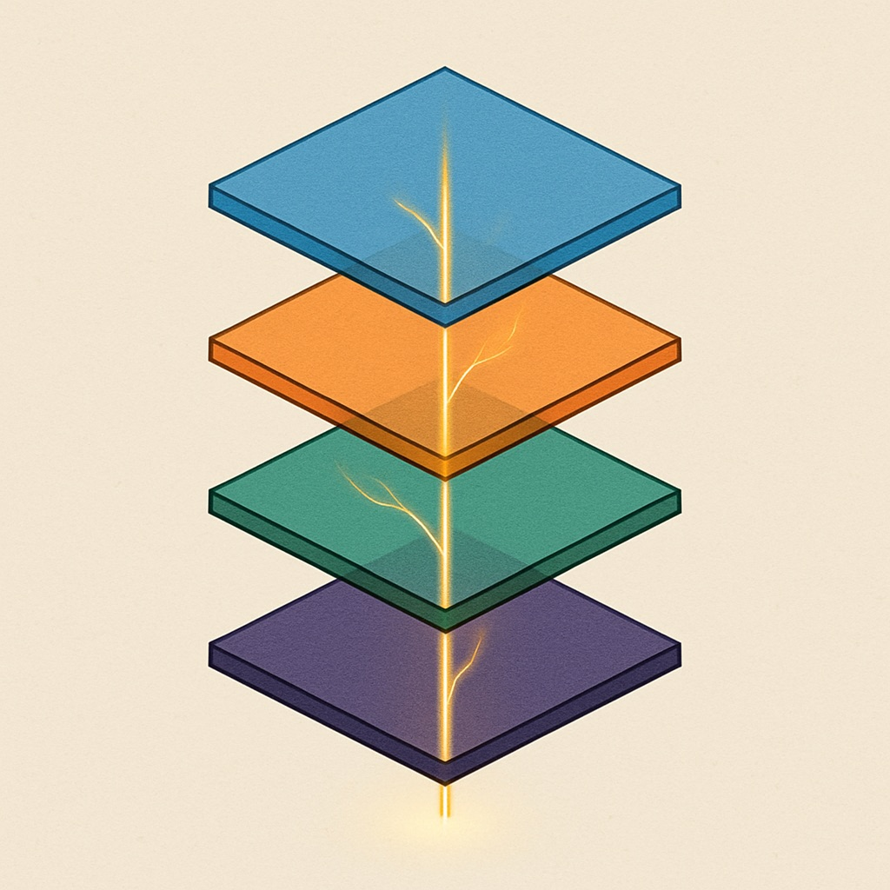
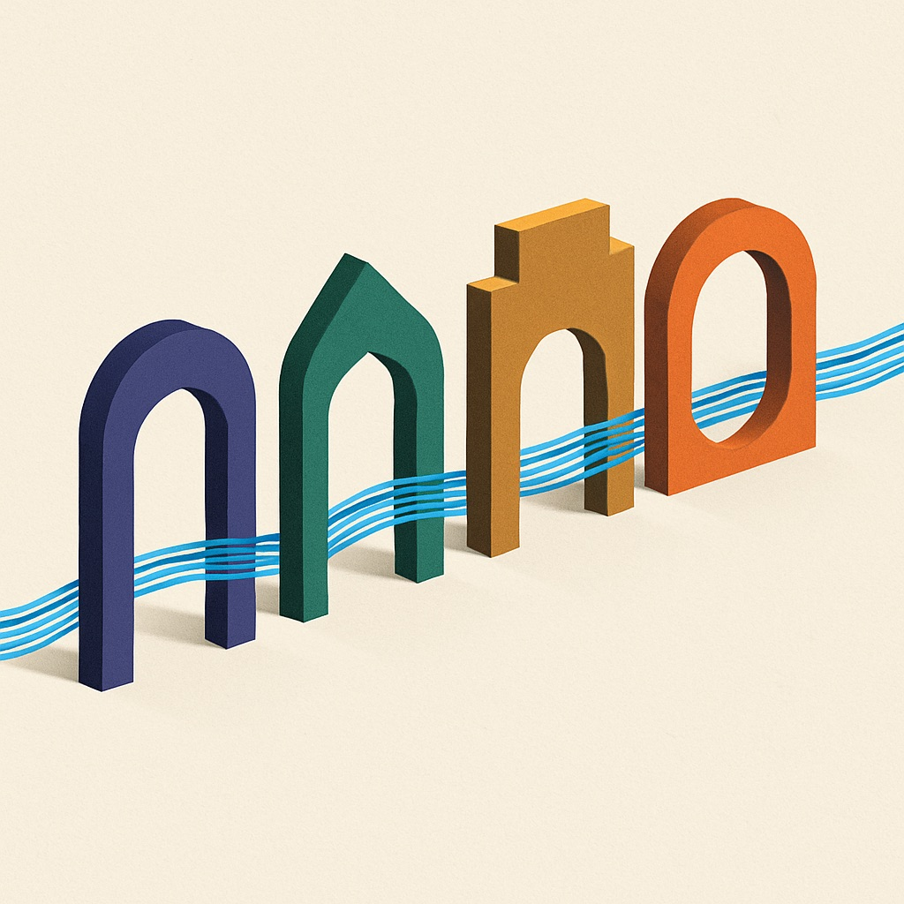
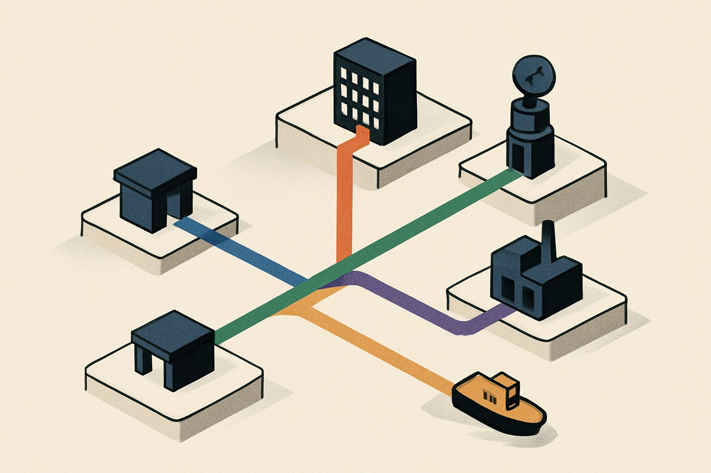
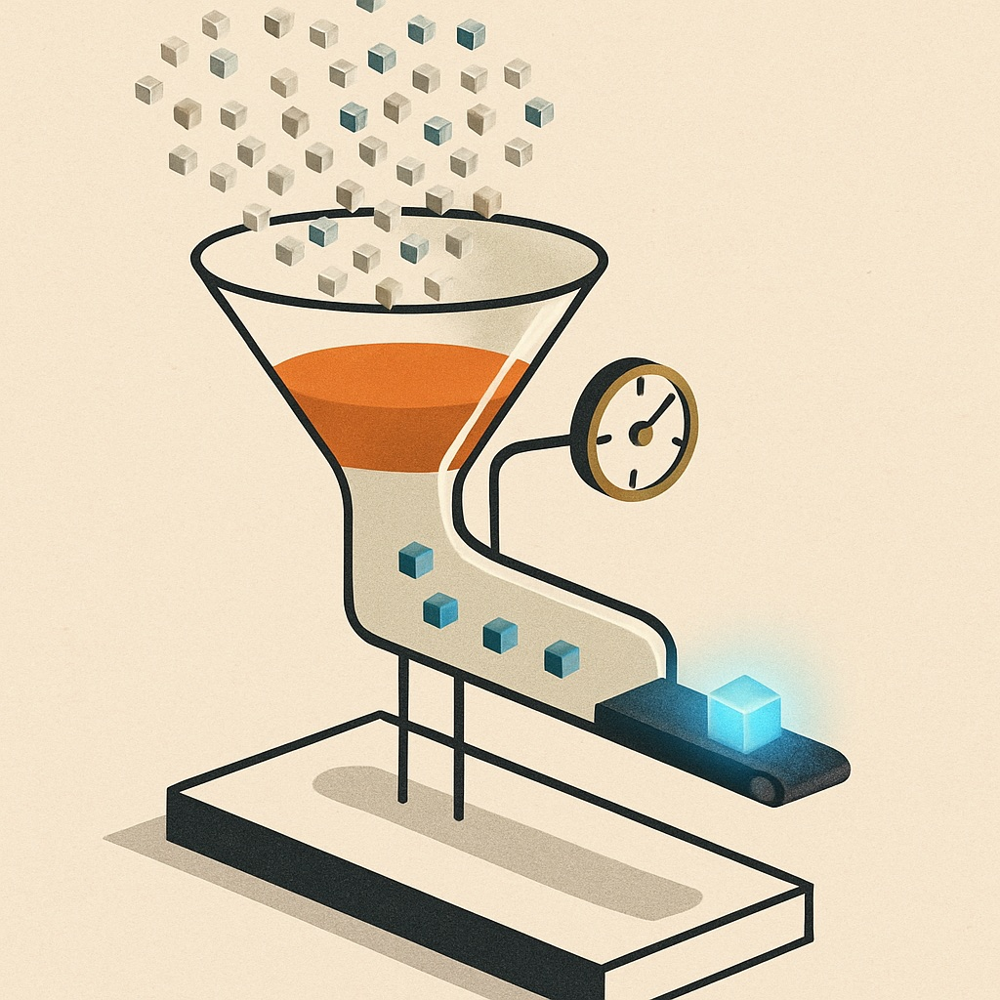

The Microsoft Copilot & AI Stack — who uses what, and why
Microsoft's AI estate now separates cleanly into four planes: an experience plane (M365 Copilot, Copilot Chat, Cowork, agents-in-apps), a build plane (Copilot Studio low-code, bridged to Microsoft Foundry pro-code), a data plane (the Graph semantic index, Azure AI Search, Fabric/OneLake), and a governance plane (Purview, Entra Agent ID, Agent 365). Since Ignite 2025 and Build 2026, all four are grounded through a shared "IQ" layer — Work IQ, Fabric IQ, Foundry IQ, Web IQ — the connective tissue that lets a low-code agent and a pro-code one draw on the same semantic knowledge. This page maps the stack, decodes the 2026 feature vocabulary, and shows five real configurations organizations are actually buying — including the cost-conscious route in.
The stack, layer by layer
Five layers, four coded planes plus one connective grounding spine. Reused color coding carries through the scenario recipes and comparison table below — the eye should link them on sight.


Four different jobs people conflate
Purview governs data (labels, DLP, lineage, eDiscovery). Entra Agent ID governs agent identity. Agent 365 is the agent fleet registry. The AI gateway governs model traffic — and unlike the other three it sits in the request path, not in the oversight plane. Keeping these four apart is the fastest way to sound (and be) precise in a governance conversation.
Cowork, Skills, and who picks the model
The three things worth walking into the room already fluent in.
Copilot Cowork
GA 16 Jun 2026What it is
An agentic execution layer: hand it a whole task and it plans, works across Outlook, Teams, Excel, Word, PowerPoint, OneDrive and SharePoint, and returns a finished deliverable — not a draft. Triggered by an email arriving, a Teams @mention, or Power Automate. Human approval checkpoints gate sensitive actions.
Pricing
- The $30/user/mo M365 Copilot seat is a prerequisite — Cowork isn't sold standalone.
- Execution itself is metered in Copilot Credits on top: $0.01/credit pay-as-you-go, or a "P3" commitment plan.
- Cost per task varies with model, retrieval depth, tool calls and runtime — independent reviewers flag that ROI is hard to predict without piloting.
Adoption vendor claim
Microsoft claims more than half the Fortune 500 are touching it, naming Accenture, Avanade, Capital Group, Koch and Zurich Insurance as adopters.
Demo use cases
- Comparing ~4,000 files for a product-version comparison
- Sales-pipeline review with drafted follow-ups
"Skills" — the extension vocabulary
glossaryMicrosoft's terminology here is genuinely fragmented across products. This table decodes it — same word can mean different things depending which surface you're standing on.
| Term | Where | What it means |
|---|---|---|
| Declarative agents | M365 Copilot / Copilot Studio | Config-driven agents (instructions + knowledge + actions) on Copilot's native orchestrator |
| Custom engine agents | Agents SDK / Foundry | Pro-code, bring-your-own orchestration and model |
| Actions | Copilot Studio | Anything an agent can invoke: connectors, flows, REST/OpenAPI, MCP tools |
| Plugins | Copilot Studio / declarative agents | The packaging layer grouping actions (OpenAPI plugin, Teams message extension) |
| MCP tools | Copilot Studio (native) | Point at an MCP server; its tools auto-surface as Actions |
| Copilot Skills (new, 2026) | PowerPoint, Excel, SharePoint, VS 2026 | Packaged one-click task workflows (e.g. Excel "Brand Kit", deck-formatting skill) |
| Fabric data agents | Microsoft Fabric | Formerly "AI Skills" — conversational Q&A over lakehouse data |
Model choice — who gets to pick, where
as of Aug 2026Indicative model prices — per 1M tokens, third-party price trackers
| Model | Provider | Input / 1M | Output / 1M | Foundry status |
|---|---|---|---|---|
| GPT-5.6 Luna | OpenAI | $0.20 | $1.20 | GA (Azure price parity from 1 Aug 2026) |
| GPT-5.6 Terra | OpenAI | $2.00 | $12.00 | GA |
| GPT-5.6 Sol | OpenAI | $5.00 | $30.00 | GA |
| Claude Sonnet 5 | Anthropic | $2.00 | $10.00 | GA (Azure-hosted) |
| Claude Opus 5 | Anthropic | $5.00 | $25.00 | GA (Azure-hosted) |
| Claude Fable 5 | Anthropic | $10.00 | $50.00 | Preview (Anthropic-hosted only) |
~ indicative, per 1M tokens — third-party trackers, not Microsoft or Anthropic list prices. Bars scaled to output price, the usual cost driver.
The rule of thumb
In M365 Copilot, Microsoft picks (with narrow user choice). In Copilot Studio, you choose from a menu. In Foundry, you choose anything.
Where's your data? What's your budget? Who builds?
Three questions that sort almost every real deployment into one of five configurations.

Five ways organizations are actually deploying this
Each card's cost tier ($ – $$$$) is derived directly from the dollar figures quoted in its cost picture, compared across all five scenarios low → high — it is a compression of the numbers below it, not a separate estimate. Scale and impact are not put on an invented numeric scale — the brief data doesn't support one across all five, so scale is stated as the actual reach described, and impact is flagged by its evidence source (independent / vendor-claimed / mixed / unproven) rather than scored.
Free tier first
Configuration
Why this route
Pay only for usage; no per-seat commitment. Tests real demand before buying seats.
Watch-out
Reality check independent
Gartner: only ~5–6% of Copilot pilots reach large-scale deployment — this is where most orgs stall.
Cost / scale / impact
Seat rollout
Configuration
Why this route
Single security boundary, works in the apps people already live in, no engineering required.
Watch-out
Examples
UBS — 50,000 seats, largest FinServ deal MS-announced · Northern Trust — enterprise-wide, 150+ use-case backlog unverified secondary · Australian government trial, 7,600 users independent — ~1hr/day saved on admin, 86% wanted to keep it, gains strongly training-dependent.
Cost / scale / impact
One instrumented agent
Configuration
Why this route
The instrumented small deployment beats the uninstrumented big one — it discovers real demand and produces the business case for (or against) S2.
Watch-out
Impact evidence
Copilot Studio analytics is the only place you get question-level telemetry: AI theme-clustering of what users actually asked, resolved / partially-resolved / escalated / abandoned outcomes, transcripts (29-day retention). Native Copilot Chat gives you none of this. Moody's ran the bottom-up version of this at scale — internal copilot to 14,000 staff harvested 800+ use-case ideas.
Cost / scale / impact
Pro-code vertical copilot
Configuration
Why this route
Full control — chunking, citations, model choice, evals — and differentiation you can actually sell.
Watch-out
Examples
BlackRock Aladdin Copilot — Azure OpenAI, supervised agentic · Ally.ai — 30% less after-call work, 85%+ summarization accuracy unverified secondary · Morgan Stanley (OpenAI-direct variant) — 98% advisor-team adoption, retrieval 20%→80% independent · Morningstar's own Intelligence Engine — Azure OpenAI since 2023.
Cost / scale / impact
Sell into Copilot
Configuration
Why this route
Distribution — be present inside the agents your clients already use. Monetize data as agent-callable tools.
Watch-out
Who else is here
The 2026 table-stakes move: Morningstar shipped Jun 2026 · LSEG May 2026 · PitchBook Jun 2026 · Moody's / S&P Global earlier · FactSet.
Cost / scale / impact
What actually happens when organizations roll this out
Independent field data, not vendor claims. This is why the evidence-first route (S3) exists.

The five routes, compared
Same facts as the cards above, compressed to one row each.
| S1 · Free tier first | S2 · Seat rollout | S3 · One instrumented agent | S4 · Pro-code vertical copilot | S5 · Sell into Copilot | |
|---|---|---|---|---|---|
| License cost | $0 | $360/seat/yr | ~$30/seat × a few | $0 (no seats needed) | $0 (build cost only) |
| Consumption cost | $50–1,000+/mo credits | —(seat-based) | ~$200/mo credits | Tokens + AI Search $75–250+/mo | Azure/MCP hosting, variable |
| Engineering effort | Low, low-code | Low–med (governance program) | Low–med | High, pro-code | Med–high (MCP build) |
| Time to value | Days–weeks | 2–4 months (rollout + training) | 2–6 weeks | 3–12 months | Weeks–months |
| Telemetry you get | None (Chat) / basic (Studio) | Viva Insights, usage-level only | Full: theme-clustered, outcome-tagged, transcripts | Full: your own evals/tracing | Platform connector logs, limited |
| Ceiling / limit | ~5–6% of pilots scale (Gartner) | ~36% activation, 57% engagement decline | No chunking control; precision ceiling | Cost & team scale — not for internal productivity | Zero exclusivity; MS is also a competitor |
| Best-fit org | SMB / cautious enterprise piloting | Enterprise standardizing on Microsoft | Function/team proving ROI first | Firms whose AI IS the product | Data/content vendors |
| Named examples | — (early-stage, generic) | UBS, Northern Trust, Australian govt | Moody's (14k staff, 800+ ideas) | BlackRock, Morgan Stanley, Morningstar | Morningstar, LSEG, PitchBook, Moody's, S&P |
Who wrote this
Ram Maree — AI & enterprise architect (Azure Solutions Architect Expert, TOGAF 9.2, CBAP), with production AI deployments across financial services and the public sector. This briefing is maintained as a working document: facts are verified against Microsoft Learn, vendor primary sources and live GitHub telemetry, estimates are flagged as estimates, and vendor claims are labelled as vendor claims.
How an engagement usually starts
- A lay-of-the-land session — this briefing, applied to your tenant and your data estate
- One scoped, instrumented agent — the cheapest configuration that produces real evidence (S3)
- A function capability map — what the telemetry says your organization should build, buy or skip next
LinkedIn · GitHub · Technical depth: the Architect's Reference · August 2026 platform update